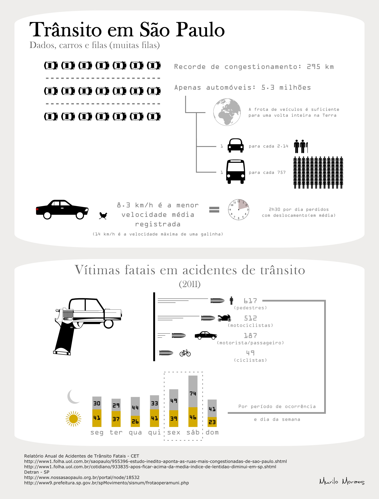

Mobilidade / Arquivo
Veículos em São Paulo
O trânsito em São Paulo visto pela frota, pelos deslocamentos e pelas mortes no trânsito.
Publicação original
Há algum tempo fiz o quadro abaixo reunindo algumas estatísticas sobre o trânsito em São Paulo. Não reúne todos os dados, mas procurei dividir nos dois quadros duas informações relevantes: a relação deslocamento-número de veículos e acidentes fatais. Para quem já havia visto o primeiro, apenas atualizei os dados. Quem quiser mais informações sobre o assunto a rede Nossa São Paulo e o relatório de acidentes fatais da CET trazem bastante informação sobre o tema. A mensagem de qualquer estatística de trânsito de São Paulo é geralmente desalentadora.

